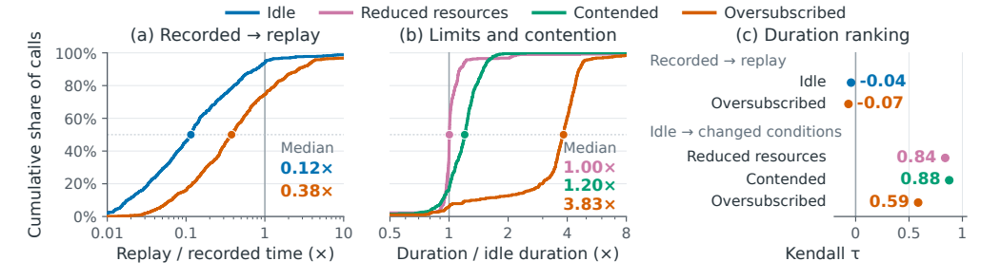
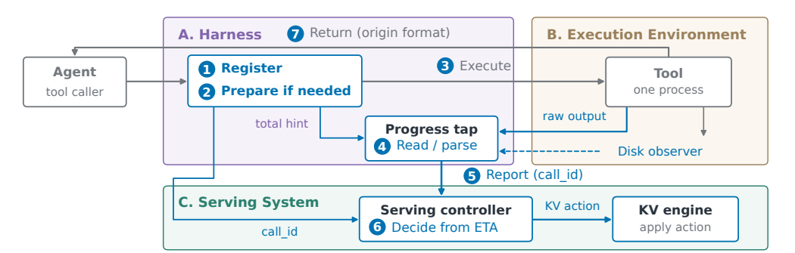
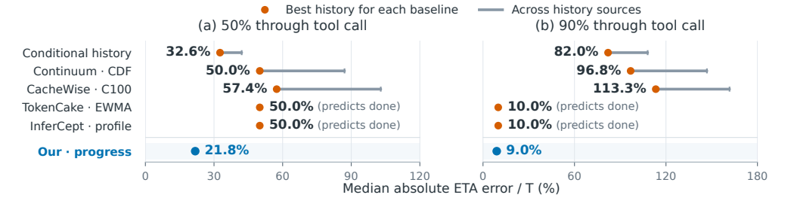
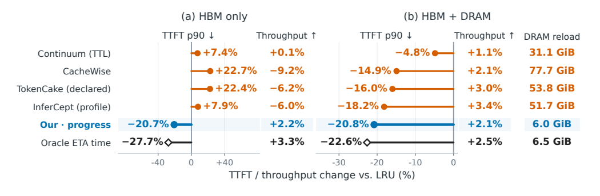

Ask the Tool, Don't Guess: Agent Tool Calls Hold Their Progress, and the Serving System Should Read It
Agent 在等待 build、test 或 download 時，對應的 KV cache 仍佔著 GPU 記憶體；既有系統只能用 tool 名稱、歷史或預先宣告時間猜它何時回來。本文改讓執行中的 tool 持續回報進度，再把剩餘時間估計餵給 cache controller；在作者的 4×H100 replay 中，相對 LRU 將 post-tool TTFT p90 降低 20.7%（HBM only）與 20.8%（HBM＋DRAM），但效益受限於可觀測 tool 的覆蓋率、coding-agent 型工作負載，以及尚未完整揭露的 engine/replay 設定。
文章目錄
先把 KV cache、tool wait 與 post-tool TTFT 串成一條時間線
理解這篇論文只需要先看懂一個 agentic request 的節奏：模型生成一段文字、呼叫 tool、等待 tool 完成，再把結果送回模型繼續解碼。難點在等待階段——GPU 暫時不做這個 request 的 forward pass，先前 token 的 key-value cache（KV cache）卻仍可能留在高頻寬記憶體（High Bandwidth Memory, HBM）中。
同一份 context 有三種命運
| 動作 | 立即效果 | tool 回來時的代價 |
|---|---|---|
| Keep / refresh | KV blocks 留在 HBM 或被移到 eviction queue 的安全端 | 下一輪可直接續算，但可能擠掉其他活躍 session |
| Release / offload | 讓 blocks 優先被逐出；有 host tier 時可落到 DRAM | 需從 DRAM reload，或在 HBM-only 情況重新 prefill |
| Bring back | 在預測回傳前，把 context 提前搬回 HBM | 太晚會增加下一輪等待；太早則白佔 HBM 並增加流量 |
分析所以 controller 並非只做「留或不留」的二元決策，而是在兩個時間尺度上權衡：tool 執行中要挑誰先被逐出，tool 接近結束時又要決定何時回載。這正是後文把「剩餘時間」而非「總時間」當作核心訊號的原因。
論文量的是 post-tool TTFT，不是整段 agent latency
Time to First Token（TTFT）在此特指 tool 回傳後，到模型下一輪產生第一個 token 的延遲。若 KV cache 仍在 HBM，TTFT 較短；若必須 reload 或重算，TTFT 會拉長。吞吐量則反映整體服務能完成多少工作，避免只為單一 session 壓低 TTFT 卻讓其他 request 受害。§5.1 · PDF p.12
有了這條時間線，下一個問題不是「哪個 cache 值得留」，而是 serving system 憑什麼知道 tool 還要多久。
真正未知的不是 tool 類型，而是這一次還要跑多久
真正的理解障礙是：tool duration 看似可以從 command、tool 名稱或歷史估計，作者卻主張這些資訊對「這一次」不夠。因為長時間 tool call 的速度受同機鄰居、sandbox load、遠端服務與 quota 影響，而這些狀態在 call 開始前並不在 command line 裡。
少數長 call 決定多數等待成本
實驗事實在 mini-SWE-agent leaderboard traces 中，至少 10 秒的 call 只佔 2.5% 數量，卻佔 63.6% tool time；小於 1 秒的 call 佔 88.3% 數量，但只佔 12.8% tool time。也就是說，cache policy 最值得精準處理的，恰是最少見、最容易受環境干擾的 build、install、test 與 generated script。§2.1 · PDF p.3 · Fig. 2
{kind=link}

實驗事實同一批 command 在 idle replay 的 duration 中位數只有 recorded 的 0.12×，在 oversubscribed replay 也只有 0.38×；更致命的是，recorded 與兩種 replay 的長 call 排序 Kendall \(\tau\) 分別為 -0.04 與 -0.07。換言之，即使 policy 只想找「最晚回來的那一個」來逐出，舊環境的歷史也幾乎沒有排序能力。§2.1 · PDF p.4 · Fig. 3
既有方法都站在 tool 外面看
論文把現有訊號排成一座 ladder：fixed TTL 什麼都不看；elapsed-time rule 只看已過時間；per-tool statistics 與 learned predictor 看名稱、參數與歷史；engine-side policy 看 GPU occupancy；較新的介面讓 caller 在開始前宣告固定 duration。它們的共同點不是模型太弱，而是沒有在 tool 執行中讀取其內部工作量。§2.1 · PDF p.4 · Table 1
因此本文真正改變的是 information boundary：把 scheduler 的問題從「從外部猜 duration」改成「讓 executor 回報可更新的 progress」。這個轉向若成立，需求也自然變成四項：訊號必須在線更新、不可改變 agent 看到的結果、要能直接映射到 cache 動作，且必須把 tenant 回報視為不可信輸入。
但「回報進度」仍可能只是漂亮口號；要成為可操作訊號，還需要把 counter、total 與 elapsed time 連成具體的剩餘時間。
讓正在跑的 tool 報進度，剩餘時間就能從內部狀態估出
先看論文的 scikit-learn build：tool 要編譯 66 個檔案，agent 的 command 卻用 tail -5 只保留最後五行。harness 從 verbose stream 旁讀 counter，並用 dry run 得到 total；當 156.2 秒時已完成 40/66，controller 便能估計還有約 102 秒。§1 · PDF p.2 · Fig. 1
分析這是把論文的 linear progress-to-ETA 轉換寫成最小形式：\(t\) 是已執行秒數，\(k\) 是已完成單位，\(N\) 是總單位，\(\widehat{R}\) 是估計剩餘秒數。代入 \(t=156.2\)、\(k=40\)、\(N=66\)，得到約 101.5 秒，對應 Figure 1 的約 102 秒；若每個單位成本不均或 load 突變，這個線性近似便會失真。
強訊號回答「還剩多少」，弱訊號只回答「快結束了」
作者沒有強迫所有 tool 都提供完美百分比。strong signal 是 \(k/N\) 或可換成 fraction 的 counter；weak signal 則可能只有「進入最後 link phase」或「下載進入 install phase」，無法估完整曲線，卻仍能在最後數秒觸發 reload。這個降級路徑讓 uneven build 與 network-stalled install 仍可提供有限但有用的訊號。§2.2 · PDF pp.5–7 · Table 2
| 來源 | 例子 | 輸出給 side channel |
|---|---|---|
| A · 既有輸出 | test runner 百分比、package 名稱 | 直接解析 fraction／phase |
| B · switch／dry run／環境痕跡 | verbose build、object files、collect-only | counter 與 total，或 final-phase marker |
| C · hook／SDK | tool protocol 的 progress notification | tool 主動提供結構化進度；作者 corpus 中尚未觀察到 |
| D · agent 產生的程式 | loop 中加入 side-channel progress line | 由 instrumented script 回報 \(k/N\) |
分析這個 insight 的價值不在 ETA 公式本身，而在把「誰擁有資訊」說清楚：tool 知道工作單位，harness 知道如何旁讀，serving controller 才知道 cache action 的 recovery budget。三者透過明確介面連起來，才能避免在 model/server 端繼續堆更複雜的 duration predictor。
接下來要驗證的，是 side channel 能否既讀到這些訊號，又不污染 agent 的 stdout、stderr、exit status 與決策。
第二條 side channel 如何在不改 agent 觀測下驅動 KV 動作
方法的核心不是把更多 log 塞回 agent prompt，而是建立第二條資料路徑：原本的 result path 原封不動地回到 agent；額外的 state path 才把 tool progress 送往 serving controller。這個分離是論文對「不改 agent 行為」的主要工程承諾。
{kind=link}

先註冊 call，再旁讀，不碰原本回傳路徑
一次 tool execution 依序經過七步：harness 以 call_id 註冊；必要時準備 verbose switch、dry-run total 或 instrumented script；啟動 tool；progress tap 解析 raw output 或 disk footprint；以同一 call_id 回報；controller 將 progress 換成 ETA；KV engine 最後執行 cache 動作。tool 完成後，原始格式的 output 與 exit status 才照舊回到 agent。§3.1 · PDF pp.7–8 · Fig. 6
三層 silence，各用不同工具拆開
- 基礎設施或 agent 主動抑制輸出。harness 暫時恢復 progress bar、複製 pipe 前的完整 stream，然後在 agent 看到的路徑上再移除新增內容；
tail、redirect 與 exit code 理論上維持原樣。 - tool 只有被正確詢問才說話。build 以 dry run 取得總單位、verbose mode 取得目前 counter；若 flag 進不了 isolated build，就觀察 object files。test runner 則從尚未換行的 dot stream 逐一解析。
- agent 自己生成的 script 本來沒有進度。模型在生成時加入 side-channel progress line，harness 比較 instrumented 與原始版本的 output、exit status，並以 benchmark score 檢查行為等價性。
所有來源最後都被正規化成同一種 event：call_id、已完成工作量、可選 total、phase 與 timestamp。若 counter 超過 total，wrapper 會撤回該報告而非硬 clamp 到 100%；多階段工具只有在歷史 phase share 穩定時才合併成 strong signal，否則降級為最後階段的 weak stop signal。§3.2 · PDF pp.8–9
controller 只需要 refresh、release 與 query
作者在啟用 prefix caching 的 vLLM 中加入三個 context-level 操作：refresh 把 resident blocks 移到 eviction queue 的安全端；release 把它們移到前端、允許逐出但仍保留可尋址性；query 回報目前 resident 比例。這些操作在 scheduler steps 之間執行，不碰 running request 持有的 blocks。App. D · PDF pp.22–23
當 ETA 小於 keep threshold 時，controller 反覆 refresh；ETA 明顯跨過 threshold 後才停止，以 hysteresis 避免抖動。在 HBM＋DRAM 配置，controller 還會在預測回傳前一個 lead time 重新 refresh／reload；若沒有 hint，engine 仍退回原本 LRU 行為。這讓 progress signal 只是一個 advisory layer，而不是重寫 scheduler。
把 tenant report 當作不可信輸入
tenant 可讓 script 假裝已完成 90%，因此 report 不能直接獲得無限 cache 優先權。作者分別建立 memory-credit 與 latency-credit ledger：準確報告累積 credit，引發動作會消耗 credit，tool 回傳後發現錯誤則扣款；耗盡時退回無訊號服務。分析這是正確的 threat-model 起點，但只是 incentive containment，不是進度真實性的 cryptographic verification。§5.3 · PDF p.14
方法鏈已閉合；真正的考驗是四層證據是否相互支持：訊號覆蓋、ETA 準確度、agent 等價性，以及 GPU 上的 end-to-end 收益。
進度訊號在何處勝過歷史預測，並轉成 20% 的 p90 改善
作者的證據不是單一 benchmark，而是一條 claim-test chain：先證明真實 tool time 中確實存在可讀進度，再證明它比 history 更準、沒有顯著改變 agent outcome，最後才放進 GPU serving replay。每一層都回答前一層留下的問題。
主張一：可讀進度不是少數 demo，而是覆蓋多數長時間等待
測試。作者對 mini-SWE-agent、OpenHands、Terminal-Bench、OpenTelemetry agent traces 等公開 corpus 分層抽樣，並加入自己在 100 個 SWE-bench Verified tasks 上的 Qwen 3.8 Flash runs；依 tool time 將 call 標為 strong、weak、declared、negligible 或 unparsable。§2.2、App. A · PDF pp.5–7、20 · Table 2、Fig. 4、Fig. 11
實驗事實strong signal 單獨覆蓋 mini-SWE-agent、OpenHands 與作者自跑 workload 的 38.2%、50.6%、48.0% tool time；加上 weak signal 後成為 66.2%、59.2%、71.8%。這支持「多數等待時間有某種可用訊號」，但不是「所有 call 都有百分比」。
限制。coding-agent 的 build/test/install 比例很高；遠端 API、等待人類或開始前零 byte 的 download 仍可能完全不透明。可讀比例也會隨 agent 是否使用 -q、pipe 或 redirect 而改變。
主張二：在 cache 決策點，in-flight progress 比最佳匹配 history 更準
{kind=link}

測試。四個 published predictors——Continuum、CacheWise、TokenCake、InferCept——依其論文規則重作；progress 以線性 rate 換 ETA。作者在 call 50% 處模擬 eviction ordering，在 90% 處模擬 bring-back timing，並刻意先讓 baseline 使用 matching environment history。§4.2 · PDF pp.10–11 · Figs. 7–8
實驗事實50% 時 progress 的 median absolute ETA error / call duration 是 21.8%，最佳 conditional history 是 32.6%；90% 時是 9.0% 對 82.0%。跨 load conditions 的 90% progress error 維持 7–10%，但由 contended 轉 idle 時，50% error 暫升到 77%，揭示 rate estimator 對突發加速會落後。App. C · PDF pp.20、22–23 · Figs. 12、16
限制。更嚴格的 timely-trigger 指標仍不高：以 allowed early error 等於 recovery budget 計，2 秒 budget 下 test/build/script 只有 30.8%／15.4%／50.0% 及時；0.5 秒時為 21.2%／1.9%／50.0%。所以 progress 的相對優勢很大，不代表 tight prefetch deadline 已被解決。App. C · PDF pp.22–23 · Figs. 13–14
主張三：side channel 不需以改變 agent 行為為代價
測試。作者比較 stock、純 side channel、side channel 加 prompt，以及直接 de-suppress agent-visible output 四種 harness；在 100 個 SWE-bench Verified tasks 上量 solved、steps、completion tokens、tool time、wall time 與 non-zero exit codes。§4.3 · PDF pp.11–12 · Table 4
實驗事實相對 stock 的 100 solved，side channel 為 -1、加 prompt 為 -2，作者稱差異未達顯著；純 side channel 的 steps 只 +0.40、completion tokens -458。反之，de-suppression 讓 non-zero exit codes 增加 455，卻未提升 signal share，支持分離 result path 與 state path 的必要性。
限制。「agent 觀測 byte-identical」主要是設計 invariant；每個新 switch、dry run 與 script instrumentation 仍要重新做 equivalence test，不能從現有 tool 類別外推為普遍保證。
主張四：較準的訊號確實轉成 GPU serving 收益
{kind=link}

測試。作者在 4×H100 SXM 上 replay agent sessions，使用開啟 prefix caching 的 vLLM，分成 HBM-only 與 HBM＋DRAM offload；比較 LRU、四個 duration predictors、progress 與知道精確 return time 的 oracle。主要 metric 是 post-tool TTFT p90、throughput 與 DRAM reload。§5.1 · PDF p.12
實驗事實相對 LRU，progress 在 HBM-only 將 TTFT p90 降 20.7%、throughput 增 2.2%；HBM＋DRAM 將 p90 降 20.8%、throughput 增 2.1%，只 reload 6.0 GiB。oracle 對應為 27.7%／3.3% 與 22.6%／2.5%／6.5 GiB。CacheWise、TokenCake、InferCept 在 HBM-only 反而讓 p90 變差 22.7%、22.4%、7.9%。§5.2 · PDF pp.12–13 · Fig. 9
條件與限制。收益集中在長 call：至少 10 秒時 mean TTFT reduction 達 34.2%（HBM only）與 35.3%（HBM＋DRAM）。但 end-to-end replay 的 served model、vLLM version、H100 容量、arrival process、concurrency、prompt/output lengths、KV block 設定與 controller thresholds，論文未提供；這限制了絕對數字的重現與跨系統外推。§5.2 · PDF p.13 · Fig. 10
20% 結果成立在哪些測試邊界之內
最容易誤讀的地方，是把「相對 LRU 的 p90 改善」直接等同於「已證明通用 agent-serving policy」。本文更精確的貢獻是：在 coding-agent 型 replay 裡，證明 tool-internal progress 是一個比 static/history duration 更有資訊的 cache hint，並做出可落到 vLLM queue 操作的原型。
最有說服力的是 evidence chain，不只是最終 speedup
分析論文先用 environment replay 否定 command-level duration 的穩定性，再用 corpus census 證明 signal availability，接著量 ETA/trigger accuracy，最後才做 GPU replay。這種分層因果鏈比只展示端到端 20% 更強，因為即使換掉 cache policy，前兩層結果仍指出「in-flight state 應成為 serving input」這個可重用設計原則。
它也沒有把 weak signal 假裝成完整 fraction：build 的 final phase、download 的 install marker 只能支援 bring-back trigger，而無法精準排序整段剩餘時間。這個誠實的降級模型讓方法更像可部署的 interface，而非單一理想化 predictor。
覆蓋率仍比精度更限制收益
實驗事實作者的 per-phase oracle split 顯示：把真值只補給目前完全聽不到的 phases，可回收 oracle 剩餘收益的 63%；只把已覆蓋 phases 變得更準，僅回收 17%。這表示下一步最重要的不是再微調線性 ETA，而是讓 tool／protocol 主動產生更廣的可讀進度。§5.2 · PDF p.13
然而 corpus 以 coding agents 為主，tool mix 偏向 test、build、install 與 generated script。對 browser automation、database query、SaaS API、長時間人工作業與非決定性 workflow，signal availability、unit uniformity 與回傳節奏都可能不同；本文沒有提供這些場景的結果。
replay 公平，但 reproducibility 資訊不足
四個 predictor 依各自論文規則重作，且 accuracy 階段先給 matching history，這對 baseline 相當有利；oracle 也提供了明確上限。另一方面，end-to-end replay 缺少 served model、engine version、request arrival/concurrency、sequence lengths、cache 容量/門檻與 threshold tuning 方法，artifact 連結亦論文未提供。因此讀者可以相信方向與相對排序，但不能僅憑本文重建同一 operating point。
安全機制只證明「限制傷害」的雛形
credit ledger 的 preliminary simulation 中，lying sessions 多持有 6% memory，而兩個 ledger 收回其中 5%；論文沒有完整說明 attacker mix、credit 初始化、collusion、跨 session identity 或對誠實租戶 tail latency 的影響。§5.3 · PDF p.14 另外，progress stream 會揭露 tenant workload 結構；作者在 Ethics Statement 明確要求把 side channel 視同 tool output 的敏感資料。Ethics · PDF p.15
在多租戶服務中，最危險的攻擊可能不是單次假報百分比，而是建立看似準確的信用後，在高壓時段集中誤報以取得 HBM residency。若 credit 無法跨 identity 聚合或加入 time-decay，成本可能被 session churn 稀釋；本文尚未測試這類策略。
因此實務上的下一步不是直接把所有 stdout parser 上線，而是把 progress 變成可驗證、可降級、可治理的跨層 contract。
從 parser 原型走向可信的 agent-serving progress contract
這篇論文最可重用的觀點，是「executor 擁有的狀態應透過窄介面成為 serving hint」。要把原型推向通用系統，研究重點應從更多 ad-hoc parser 轉向 protocol、robust estimation 與受控部署實驗。
三組優先實驗
- 分析Protocol-native coverage study。在 Model Context Protocol（MCP）的 progress notification 或等價 SDK 中加入
completed、total、phase、confidence 與 monotonicity contract；比較 native report、parser、disk observer 三者的覆蓋、額外成本與錯報率。 - 分析線上 load-change estimator。以 sliding window、change-point detection 與 uncertainty interval 取代單一 whole-run rate；特別量 contended→idle 的 77% midpoint error 是否下降，同時監控是否增加過早 reload。
- 分析跨 workload、跨 memory hierarchy replay。加入 browser/API/database/human-in-the-loop agents，並同時測 HBM、host DRAM、remote KV store 與 disaggregated prefill/decode；固定 request trace 後報告 TTFT 分布、throughput、bytes moved、recompute FLOPs 與租戶公平性。
可直接移植的設計原則
Separate planes
把 agent-visible result plane 與 serving-state plane 分開，讓 optimization metadata 不改變模型觀測。
Graceful degradation
fraction 不可信時降級成 phase/end signal；完全無訊號時回到 LRU，而不是硬猜 100%。
Action-aligned metric
不要只報 duration MAE；直接量 eviction ordering、prefetch trigger timing、post-tool TTFT 與 data movement。
Untrusted hints
hint 只能影響有界資源，必須帶 credit、fallback、privacy control 與事後校驗。
研究討論題
- progress interface 應回報 raw work units、ETA distribution，還是只回報 cache action deadline？哪種最能跨 tool 泛化又最少洩漏資訊？
- 若一個 agent 同時啟動多個 tools，cache controller 應如何組合相依 DAG、join semantics 與最慢分支的 progress？
- 在 disaggregated inference 中，hint 應驅動 HBM eviction、DRAM/SSD tiering，還是跨節點 KV transfer？不同 network bandwidth/queueing 下 threshold 如何協同？
- credit ledger 如何抵抗 identity churn、collusion 與 phase-aware strategic lying，又不讓低頻、首次出現的誠實 tool 永遠得不到收益？
推測若 protocol-native progress 能覆蓋遠端 API 與長時間 workflow，這個訊號不只可用於 KV cache，也可能驅動 prefill/decode capacity reservation、GPU power state、network prefetch 與 checkpoint placement；但每一種資源都需要獨立的錯報成本與隔離機制。
查證索引：作者、術語與關鍵證據位置
| 作者 | Yipeng Liu；Yingqiang Zhang；Feifei Li；Huanchen Zhang |
|---|---|
| 機構 | Tsinghua University；Zhejiang University；Alibaba Cloud Computing |
| 版本 | arXiv:2609.18849v1，2026-09-16，primary cs.DC；cross-list cs.AI、cs.OS |
| 分類 | 分析LLM Systems / KV Cache Management。主要貢獻是把 tool progress 轉成 KV cache retention、eviction 與 reload hint；harness 是訊號取得層，而非最終優化目標。 |
| 頁數 | 共 23 頁 |
| 連結 | arXiv 論文頁面 · 開啟本地 PDF |
術語表
- KV cache
- Transformer 已處理 token 的 key/value state；保留可避免重做 prefill，但會消耗 HBM。
- Tool wait
- agent 發出 tool call 後、tool 回傳前的 idle interval；本文在此期間做 cache 決策。
- Strong signal
- 能提供已完成工作量與 total，可估剩餘 fraction 的 progress。
- Weak signal
- 無法可靠估整段 fraction，但能準確指出最後 phase 或接近結束。
- Side channel
- 與 agent-visible result path 分離、只供 serving system 消費的 state path。
- Recovery budget
- 把 context reload／recompute 到可立即生成下一 token 所需的 lead time。
- Post-tool TTFT
- tool 回傳後到模型下一輪第一 token 的延遲。
關鍵證據索引
- 長 call 集中度：§2.1 · PDF p.3 · Figure 2。跨環境 duration／rank instability：PDF p.4 · Figure 3。
- Timing-signal ladder：§2.1 · PDF p.4 · Table 1。66-file progress-to-ETA：§1 · PDF p.2 · Figure 1。
- Strong／weak signals：§2.2 · PDF pp.5–7 · Table 2、Figures 4–5。跨 corpus census：Appendix A · PDF p.20 · Figure 11。
- result path 與 state path 的七步流程：§3.1 · PDF pp.7–8 · Figure 6。
- event schema、invalid-total fallback 與 multi-phase handling：§3.2 · PDF pp.8–9。
- 50%／90% ETA error：§4.2 · PDF pp.10–11 · Figures 7–8。Load-change robustness：Appendix C · PDF pp.22–23 · Figures 12、16。 Trigger rate：Figures 13–15。
- Agent outcome/cost：§4.3 · PDF pp.11–12 · Table 4。4×H100 replay：§5.1 · PDF p.12。
- TTFT p90、throughput 與 DRAM reload：§5.2 · PDF pp.12–13 · Figure 9。
- 長 call 分層收益與 coverage/precision oracle split：§5.2 · PDF p.13 · Figure 10。
- vLLM primitives/controller：Appendix D · PDF pp.22–23。
- 雙 credit ledger：§5.3 · PDF p.14。Workload leakage：Ethics · PDF p.15。